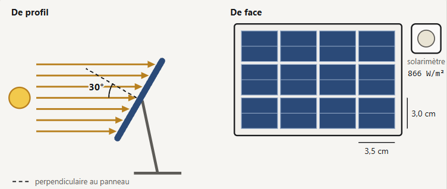
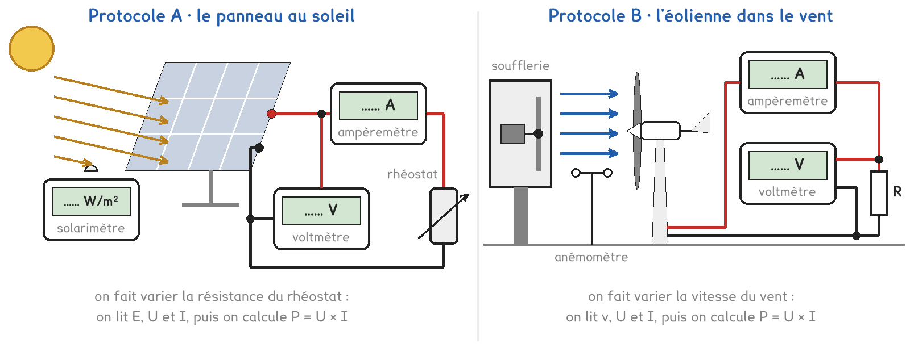
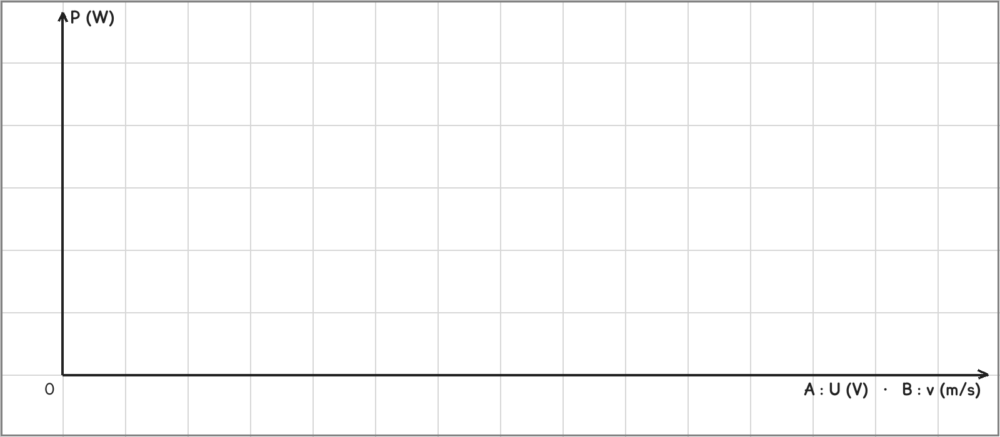

1re Bac Pro · MELEC, CIEL, MMCM, MVTR · TP sur simulation SIM-18
Quelle part de la puissance reçue du soleil ou du vent un panneau ou une éolienne transforme-t-il en électricité ?
3 figures
Sujet. Sur le toit d’un abri de jardin, un petit panneau solaire recharge la batterie de l’éclairage. Chez le voisin, une petite éolienne tourne au bout d’un mât. Le vendeur promettait « de l’électricité gratuite » : mais combien, pour combien de soleil ou de vent ?
Problématique : quelle part de la puissance reçue du soleil ou du vent un panneau et une éolienne transforment-ils en électricité ?
La simulation. Ouvrir « Panneau solaire et éolienne » : le fichier photovoltaique-eolienne.html, sur l’ENT ou la clé du professeur.
Le panneau de la simulation, de profil et de face. Il est incliné de 30° par rapport aux rayons.

a) Calculer la surface des cellules. On rappelle que 1 m² = 10 000 cm².
| Une cellule, 3,5 cm × 3,0 cm | Les douze cellules | Les douze cellules |
|---|---|---|
| S = ……………… cm² | S = ……………… cm² | S = ……………… m² |
Face au soleil, le panneau recevrait un éclairement de 1 000 W/m².
b) Relever l’éclairement mesuré par le solarimètre, puis calculer E ÷ 1 000.
E = ……………… W/m² · E ÷ 1 000 = ……………… · soit ……… % de l’éclairement.
c) L’éolienne a un rotor de 50 cm de diamètre. Calculer la surface balayée S = π × r².
r = ……………… m · S = ……………………………………… m²
Deux protocoles répondent à la même question. Une partie de la classe prend A, l’autre prend B, et on compare à la fin.

Protocole A · le panneau. Au soleil, on fait varier la résistance d’un rhéostat branché sur le panneau. On lit U et I, on calcule P = U × I : la plus grande valeur est Pmax. Le panneau reçoit la puissance E × S.
Protocole B · l’éolienne. Dans le vent d’une soufflerie, on monte la vitesse v pas à pas. On lit v, U et I, on calcule P = U × I. Le vent qui traverse le rotor porte la puissance ½ × ρ × S × v³, avec ρ = 1,20 kg/m³ pour l’air.
Le rendement est le rapport de la puissance électrique à la puissance reçue.
d) Compléter le tableau pour comparer les deux protocoles.
| Protocole A | Protocole B | |
|---|---|---|
| Ce qu’on fait varier | …………………………… | …………………………… |
| Ce qu’on mesure | …………………………… | …………………………… |
| La puissance reçue se calcule par | …………………………… | …………………………… |
Le choix se fait maintenant, avant d’ouvrir la simulation.
e) Quel protocole prenez-vous ? Justifier en une phrase.
Je prends le protocole ……… parce que ……………………………………………………………………
f) Avant de mesurer : quelle part de la puissance reçue devient électrique ? Entourer.
moins de 20 % · entre 20 % et 60 % · plus de 60 %
Avant de commencer. Ouvrir la simulation et l’onglet de votre protocole. En A, garder « Voile de nuages » à 0 %, l’angle à 0° et « Ombre sur le panneau » sur « aucune ».
g) Protocole A seulement : relever U et I, puis calculer P = U × I.
| R (Ω) | 0 | 5 | 10 | 15 | 17 | 20 | 30 | 50 | 100 |
|---|---|---|---|---|---|---|---|---|---|
| U (V) | ……… | ……… | ……… | ……… | ……… | ……… | ……… | ……… | ……… |
| I (A) | ……… | ……… | ……… | ……… | ……… | ……… | ……… | ……… | ……… |
| P (W) | ……… | ……… | ……… | ……… | ……… | ……… | ……… | ……… | ……… |
Interrupteur ouvert : E = ……………… W/m² et U = ……… V. Avec l’ombre d’une demi-cellule, à 17 Ω : U = ……… V, I = ……… A, P = ……… W.
h) Protocole B seulement : relever v, U et I, puis calculer les puissances.
| Réglage (%) | 30 | 40 | 50 | 60 | 70 | 80 |
|---|---|---|---|---|---|---|
| v (m/s) | ……… | ……… | ……… | ……… | ……… | ……… |
| U (V) | ……… | ……… | ……… | ……… | ……… | ……… |
| I (A) | ……… | ……… | ……… | ……… | ……… | ……… |
| P = U × I (W) | ……… | ……… | ……… | ……… | ……… | ……… |
| P du vent (W) | ……… | ……… | ……… | ……… | ……… | ……… |
| P ÷ P du vent | ……… | ……… | ……… | ……… | ……… | ……… |
Vitesse de démarrage : v = ……… m/s. Vitesse de coupure : v = ……… m/s.
i) Tracer P en fonction de U (A) ou de v (B), et relier les points.
Échelles : en A, 2 cm pour 1 V et pour 1 W ; en B, 1 cm pour 1 m/s et pour 5 W.

j) Calculer le rendement : en A avec Pmax, en B au plus grand P ÷ P du vent.
P électrique : ……………… W · P reçue : ……………… W · rendement : ……………… %
k) Schématiser le circuit de votre protocole, avec les symboles normalisés.
Le panneau ou la génératrice, les deux appareils de mesure, la charge.
Le schéma se dessine sur la feuille du TP.
l) Votre prévision f est-elle confirmée ?
m) Avec un groupe de l’autre protocole, comparer les deux rendements.
Situer aussi l’éolienne par rapport à 59 %, la limite de Betz.
n) Sous une lampe, devant un ventilateur de salle : que cache la simulation ?
o) Répondre à la problématique en deux phrases.
Ce que ce TP a établi, et qui vaut pour toute installation solaire ou éolienne :
À RETENIR
Un panneau photovoltaïque transforme l’énergie de la lumière, une éolienne celle du vent, en énergie électrique, sans émettre de CO₂ pendant la transformation.
Le rendement, P électrique ÷ P reçue, est toujours plus petit que 1 : 15 à 20 % pour un panneau, jamais plus de 59 % pour une éolienne, la limite de Betz.
La puissance d’un panneau baisse avec l’éclairement, l’inclinaison et l’ombre. Celle du vent varie comme v³ : deux fois plus de vent, huit fois plus de puissance.
Protocole A, rhéostat à 17 Ω. Régler « Angle des rayons avec la perpendiculaire » sur chaque valeur du tableau, relever E, puis calculer E ÷ 1 000 et le cosinus de l’angle à la calculatrice.
| L’angle | 0° | 30° | 45° | 60° |
|---|---|---|---|---|
| E (W/m²) | ……… | ……… | ……… | ……… |
| E ÷ 1 000 | ……… | ……… | ……… | ……… |
| cos (angle) | ……… | ……… | ……… | ……… |
Que remarquez-vous ? Comment orienter un panneau au cours de la journée ?
TP sur simulation de physique-chimie. Le travail se fait sur la feuille du TP : cette page en est la version à l'écran, sans les lignes à remplir. Rien n'est enregistré.